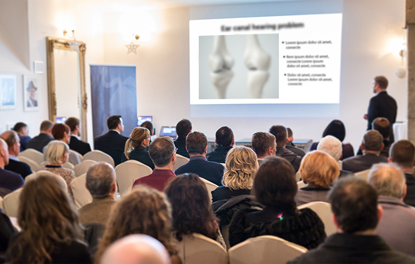

vraćanje udobnosti pri kretanju
Gotovo je doba bolova u zglobovima i kralježnici!
Inovativni tretman španjolskog profesora koji trenutno ublažava bol i jamči 100% zdrave zglobove i kralježnicu

Hoće li novi tretman ubiti posao proizvođačima tableta za ublažavanje bolova, masti i gelova protiv bolova u zglobovima? Najprestižniji stručnjaci iz područja reumatologije, neurologije i fizioterapije ne sumnjaju da će tako biti. Zahvaljujući inovativnoj prirodnoj formuli koju su razvili Španjolci, dogodio se dugo očekivani iskorak u borbi za zdravlje zglobova i kralježnice.
Već se više od 14 tisuća pacijenata koji su se podvrgli ovom liječenju riješilo boli i potpuno vratilo zdravlje zglobova i kralježnice. Kao rezultat toga, prestali su koristiti lijekove protiv bolova, trošeći bogatstvo na terapiju i trpeći duge redove za posjet stručnjacima. Ovaj je tretman čak pomogao onim pacijentima koji zbog degeneracije, upale i boli više nisu imali nade da će izbjeći invalidska kolica. Kako je ovo moguće?
Profesor Luis Recio (molekularni biolog) odlučio je izliječiti progresivni osteoartritis svoje majke. Želio ju je osloboditi kronične boli, ukočenosti i ispucalih zglobova te joj vratiti punu pokretljivost. Tako je započela revolucija u reumatologiji! Nakon godinu dana dubinskih kliničkih ispitivanja, profesor je razvio makromolekularnu formulu, prirodnu, sigurnu i jednostavnu za uporabu koji trenutno ublažava bol i obnavlja zglobove i kralježnicu, oslobađajući ih ukočenosti, upala, edema i degeneracije. Stoga u potpunosti vraća tjelesno zdravlje.
Stručni medicinski časopisi već su ovaj tretman nazvali "pionirskim napretkom u reumatologiji". Također profesor je dobio nominaciju za Nobelovu nagradu za svoj uspjeh. Zahvaljujući djelovanju njegove formule, čak i ljudi s najtežom i dugotrajnom degeneracijom mogu obnoviti zglobove i kralježnicu, u potpunosti vratiti fizičko zdravlje i oprostiti se od ublaživača boli koji uništavaju jetru.
"Do sada poznate metode liječenja kralježnice i zglobova su gubljenje vremena i novca!" Koji su razlozi da se tako misli?

Ove riječi potvrđuje više od 14 tisuća zadovoljnih korisnika makromolekularne formule za regeneraciju zglobova i kralježnice, koji su se već riješili boli i vratili 100% svog zdravlja. Iz tog smo razloga odlučili pažljivo analizirati dosad poznate metode liječenja kralježnice i zglobova, provjeriti koji su njihovi nedostaci i s čime se ljudi koji uzimaju lijekove protiv bolova i svakodnevno moraju suočiti kako bi „ojačali zglobove i zglobove. kralježnice. "Evo zaključaka:
-
Vježba samo pogoršava problem.
Mnogo je skupina vježbi koje su namijenjene „jačanju zglobova i kralježnice“ i moraju se raditi svaki dan po nekoliko minuta. Međutim, ove su vježbe obično vrlo bolne. Nemaju svi snage i vremena za svakodnevno naporno vježbanje. Najgore od svega je što prijeti mala pogreška u vježbanju pogoršava ozljedu zglobova i kralježnice, što kao rezultat može dovesti do invaliditeta.
-
Lijekovi protiv bolova djeluju kratko vrijeme i negativno utječu na jetru.
Lijekovi protiv bolova traju i do 3 sata. Da biste ublažili kronične bolove, morate ih uzimati nekoliko puta dnevno. Zauzvrat, tablete za "jačanje zglobova i kralježnice" sadrže umjetne sastojke koji se masovno proizvode po najnižoj cijeni. Upotreba takve kemije potpuno je beskorisna. Budući da su umjetni sastojci, ljudsko ih tijelo ne apsorbira niti koristi za regeneraciju hrskavice. S druge strane, oni uzrokuju nepregledan popis nuspojava poput peptičnog čira, gubitka sluha ili oštećena funkcija bubrega i jetre. Uzimate tabletu u nadi da će ublažiti bol, ali umjesto toga na kraju patite sto puta više. To je apsurdno i nema nikakve veze s krajnjim ciljem.
-
To je gubljenje vremena i novca
Ima li smisla novac koji zaradite trošiti na kemijske proizvode koji, osim kratkotrajnog i beznačajnog djelovanja, truju i štete tijelu? Naravno da ne. Uz to, vježbe koje radite sami ili s fizioterapeutom dugotrajne su i ne garantiraju poboljšanje. A najgore je što prijete pogoršanjem bolesti.
Zbog toga je makromolekularni tretman profesora Resia prava prekretnica u borbi za zdravlje zglobova i kralježnice.
Tablete pružaju kratkotrajno i manje olakšanje, uništavaju probavni sustav i truju tijelo. Zauzvrat, masti i gelovi služe samo obogaćivanju farmaceutskih tvrtki. Sve to troši zdravlje i novac, koje je tako teško zaraditi. Međutim, tretman profesora Recia temelji se isključivo na prirodnim sastojcima i ne uzrokuje nikakve nuspojave. Odmah ublažite bol i popravljate hrskavicu iz dana u dan kako biste vratili pokretljivost i ne ostavljaju tragove utrnulosti i boli. Ova inovativna formula kombinacija je najnovijeg napretka u molekularnoj biologiji, neurologiji i reumatologiji.
Sastojci koje sadrži potpuno su prirodni i sigurni za zdravlje. Također, zahvaljujući ispravnoj formuli, imaju snažnija regenerirajuća svojstva. Kad se koriste svaki dan, obnavljaju pokretljivost čak i kod ljudi s teškim degeneracijama i dugotrajnom upalom ili posttraumatskim komplikacijama.
Svatko sada može ponovno imati 100% zdrave i jake zglobove
Tretman je dostupan u maloprodaji pod nazivom Fortuflex. Formula makromolekula je aktivna krema koja se trenutno upija u kožu i i odmah ublažava bol, oticanje i ukočenost, kako u zglobovima tako i u kralježnici. Za razliku od tableta napunjenih kemikalijama, makromolekularna obrada potpuno je sigurna za tijelo, što su potvrdile studije u njemačkom istraživačkom centru u Dortmundu.
Ovi testovi su također pokazali da učinkovitost tretmana prelazi 98% . Zahvaljujući njemu, ljudi u dobi od 21 do 93 godine postigli su impresivne rezultate: eliminirali su bol, oticanje i ukočenost, a također su neutralizirali sve degeneracije, upale i komplikacije uzrokovane ozljedama zglobova i kralježnice, bez obzira na dob.
Dokazana učinkovitost
Ti su ljudi ublažili čak i bolove u zglobovima i najjaču kralježnicu jednostavnom primjenom makromolekularne formule profesora Recija. Zahvaljujući njoj napokon su se mogli slobodno kretati i izvoditi sve radnje koje im do tog trenutka nisu bile dostupne zbog bolova.
Sljedećih dana liječenja pacijenti su ušli u fazu intenzivnog oporavka hrskavičnog tkiva i sinovijalne tekućine, što im je omogućilo uklanjanje ukočenosti, grčeva i pukotina u kostima. Onda oni su ojačali zglobove, tetive i mišići za 87% i eliminirali su oticanje i upalu. Zglobovi i kralježnica automatski su se rekonstruirali 24 sata dnevno.
Kao rezultat, eliminiran je artritis zglobova i kralježnice, a ispitanici su osjećali više boli i bili su 3 puta aktivniji. Ali to nije sve. Nakon studije sudionici su se složili i vratili su svoju mladenačku pokretljivost. Danas mogu hodati, trčati i plesati bez boli i ukočenosti, baš kao kad su imali 20-25 godina!
Dokumentirani učinci liječenja govore sami za sebe:
nestanak ukočenosti, utrnulosti i ispucalih kostiju
uklanjanje edema i upale
100% oporavak pokretljivosti
1 faza
2 faza
3 faza
4 faza
1 faza - trenutno ublažavanje boli; vraća udobnost hodanja
2 faza - intenzivna regeneracija hrskavice i sinovijalne tekućine; nestanak ukočenosti, utrnulosti i pucanja kostiju
3 faza - jačanje zglobova, tetiva i mišića za 87%; uklanjanje edema i upale
4 faza - uklanjanje degeneracije zglobova i kralježnice; 100% oporavak pokretljivosti
Diana (68) i Roberto (66) iz Valladolida bili su među prvim Španjolcima koji su koristili Fortuflex:

Diana: „Suprug i ja radimo na našoj organskoj farmi već dugi niz godina, ovo je cijeli naš život. Sad kad je organska hrana u modi, morali smo više raditi. Bili smo sretni dok nam zglobovi nisu počeli pucati. Osjetio sam bol i ukočenost u zapešćima i laktovima, škripu kralježnice. Muža su počela boljeti koljena i kukovi. Ali mi se nismo htjeli odreći svoje zemlje zbog neke boli. Za Fortuflex smo saznali na vrijeme. Da ga nismo koristili, napravili bismo najvažniju pogrešku u svom životu! Osjećali smo se kao oronuli starci, ali nakon liječenja uspjeli smo se vratiti na posao u polju, a radimo čak i brže od svojih nećaka! Moj suprug vozi bicikl, a ja volim heklati. Nema bolova, škripanja, utrnulosti ili oteklina. Na vjenčanju naše kćeri izbačeni smo s plesnog podija. Što može biti bolje? Puno hvala".
Zašto trpjeti oronulost kad možete ukloniti bol i vratiti stopostotnu pokretljivost sigurno i učinkovito?
Njemački istraživački centar u Dortmundu nedvojbeno je dokazao učinkovitost Fortuflex-a. Profesor Recio i dalje prima nominacije za nagrade za svoje otkriće, uključujući Nobelovu nagradu.
Dobra vijest je da možete dobiti Fortuflex, sa popustom 50%. Njegova cijena je 913 kn umjesto 1826 kn . Akcijska ponuda vrijedit će do kraja Liječenje možete pronaći na sljedećoj stranici.
Akcijska ponuda vrijedi do


Komentari
Pročitajte komentare na članak „Gotovo je doba boli u zglobovima i kralježnici! Revolucionarni tretman ... "
Stipe 2021
I kažu da mi Hrvati nismo sposobni postići uspjeh na globalnoj razini. Izuzetno postignuće za Nobelovu nagradu. Čestitamo
Mia 2021
Koristila sam gel, dobila ga na popustu, izašao je vrlo jeftino, koljeno me ne boli i više ne škripi kad ga pomaknem! Osjećajte se novo, toplo preporučujem.
Maria 2021
Podvrgla sam se i liječenju zgloba lakta i zapešća, bolovi su nestali kao magijom, a prije toga pola godine sam radio masaže i posebne zahvate koji nisu pomogli! Ne gubite vrijeme i novac i koristite profesorovu formulu.
Anita 2021
Vau. Baš sam tražila na internetu nešto korisno za upale i otekline zglobova. Ovo je još jedan portal koji opisuje ovaj tretman, već sam ga naručila:)
Ante 2021
Prijatelji. Ispričat ću vam svoju priču, borio sam se s bolovima u koljenu gotovo 6 godina. Toliko godina rada u pogonu uzrokovalo je užasne bolove. Potrošio sam 1000 eura na raznu robu, naljepnice za koljena i ostalo, to nije toliko, ali uzimajući u obzir prosječnu mirovinu, mogu me razumjeti. Nijedan lijek nije pomogao, jedino što je bilo učinkovito bili su želučani problemi. Isto je i s magnetskim trakama: ljudi gube novac - to je prevara! No, nedavno mi je kćer dala ovaj proizvod i bio sam zapanjen. Koljena me uopće ne bole, a krećem se bez problema. Jučer sam čak sjedio na skuteru moje unuke, puno smo se smijali, ne znam hoće li svima odgovarati, ali svidjelo mi se! Vrijedno pokušaja.
Davor 2021
Koristim kremu i osjećam se sjajno, olakšanje je neopisivo ... Nemam nuspojava ili nešto slično ... Dakle, za mene je ovo najbolje što sam probao ... I razmišljajući o novcu koji sam platio zbog raznih masaža i postupaka koji nisu pomogli, uznemirim se. Neću više ništa pokušavati ...
Iris 2021
Posjetivši ovu stranicu, nisam očekivala da ću čitati o takvim čudima. Također mi je potreban ovaj tretman. Želim se riješiti strašne boli u kuku i koljenima. Napokon vidim zaista dobar tretman!
Irena 2021
Koristim kremu i osjećam se sjajno, olakšanje je neopisivo ... Nemam nuspojava ili nešto slično ... Dakle, za mene je ovo najbolje što sam probala ... I razmišljajući o novcu koji sam platila zbog raznih masaža i postupaka koji nisu pomogli, uznemirim se. Neću više ništa pokušavati ...
Mario 2021
Kupio sam Fortuflex. Htio sam eliminirati bolove u kralježnici, nogama i laktovima, inače ću uskoro postati djed i trebao bih biti zdrav! Efekt me zapanjio, bol i oteklina su nestali!
Iva 2021
Moja mama je jako stara, pa imam pitanje za vas: postoje li ljudi stariji od 80 godina ili njihove obitelji / prijatelji? Želim znati ima li nade da pomognem svojoj majci. Ona se gotovo ne miče, ima reumatske bolove. Jako mi je žao zbog nje i zabrinuta sam. Molim odgovorite mi.
Ivka 2021
@Iva, čim sam saznala za ovaj tretman, počela sam ga koristiti za kralježnicu, djelovao je kod mene, pa sam ga savjetovala ocu. Toliko se popravio da je obukao majčin šešir i ogrtač i počeo plesati) Stoga preporučujem vašoj majci
Ivka 2021
@ hahaha:) super, pozdrav tati. Puno vam hvala na odgovoru. onda ću kupiti mami
Mirko 2021
Koristio sam ga i za rame i kuk nakon ozljede i brzo mi je pomoglo. Preporučujem
Jelena 2021
Voljela bih probati, ali bojim se da to neće pomoći. Toliko sam potrošila na beskorisne metode
Jelena 2021
Ah!! Upravo sam pročitala da je ovo tretman s trostrukim djelovanjem, tako da nema razloga za brigu. Pokušat ću
Ivan 2021
Prijatelj je koristio ovu kremu i nedavno mi je preporučila. Naručio sam na popustu i dobio ga 3 dana kasnije. Zasad su rezultati bolji nego što sam mislio - bol je nestala, oteklina je nestala i svaki dan se osjećam bolje!
Bogdan 2021
Naručio sam, čekam dostavu. Svakako ću pisati o rezultatima